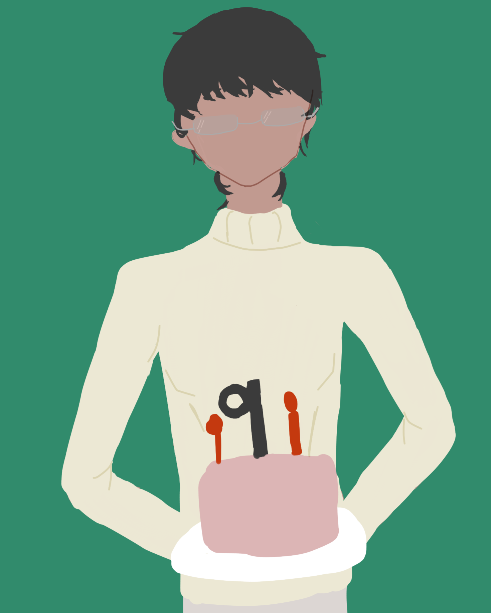
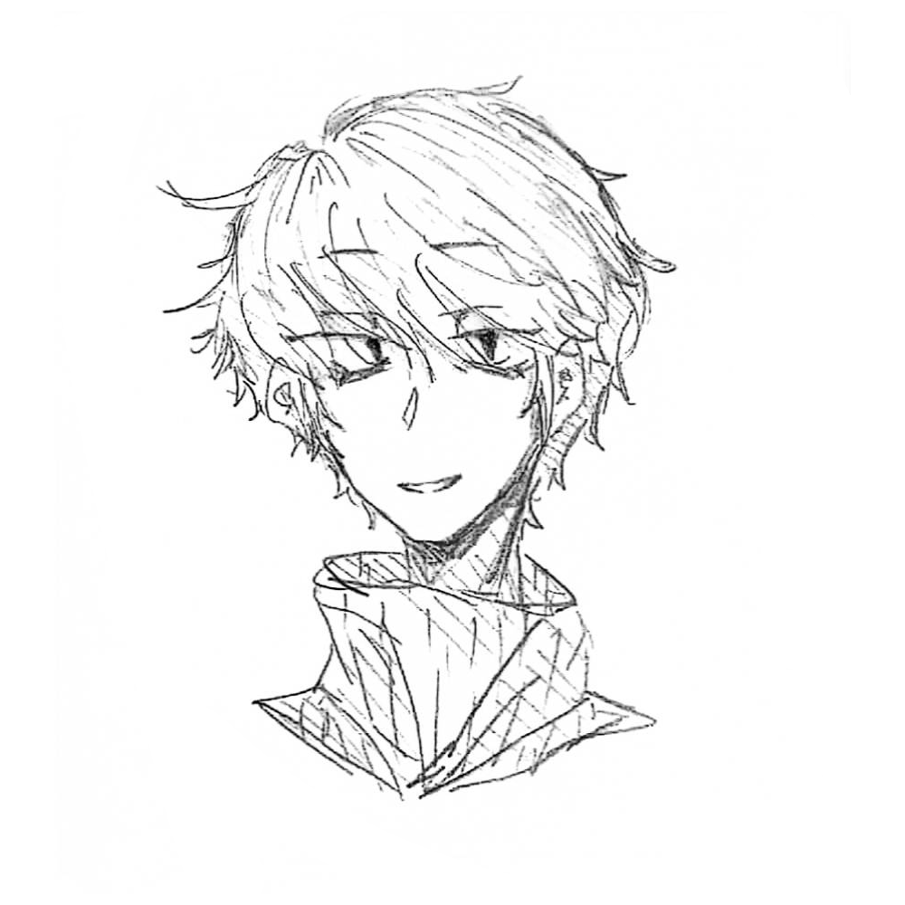

Vosto全域資料庫
Vosto全域資料庫
「好喜歡。」
| 沈六 | |
|---|---|
 |
|
| 姓名 | 沈六 |
| 生日 | ？月？日 |
| 年齡 | 23歲 |
| 性別 | 男 |
| 身體資訊 | 173公分 | 70公斤 | AB型 |
| 愛好 |
甜食 雨季 |
| 不喜 |
毆打 |
該條目正在施工中。
一頭烏黑的直短髮，齊劉海，但髮末呈現自然捲起，脖頸兩側有幾縷碎髮。臉上總是掛著淡淡的笑容，純黑的曈膜，鳳眼使他給人一種距離感，左側眼角帶著一點淚痣，戴著銀色的圓框金屬眼鏡。
感覺起來去是文靜的人。手上佈著薄薄的繭，指甲為了工作與衛生都是短的，沒有配戴任何的掛件與刺青，屬於精壯的類型。
服裝：
．素色寬鬆的運動服、運動休閒灰色棉褲。
健談，不管是面對任何人他總是可以做到侃侃而談，雖然如此，但他也不會讓人感到聒噪，很會看臉色，也許因為如此，許多人都願意與他談心，也許內心會反對，但不會直接說出批判。動靜皆宜，他喜歡閱讀，也喜歡出遠門旅行，或是到吵雜的地方與人群接觸，這些都不排斥。交了許多朋友，因此不管做什麼事情，都能找到人一起。即使是朋友、重要的人也不能開太過份的玩笑。
自出生起，為人和善主動助人，鄰里之間讚譽有加，到家以後會馬上去洗澡才會繼續活動，生活作息超級規律，不沾染任何不良嗜好，極少擁有負面情緒，會將自己的情緒表露在臉上，要說有什麼缺點的話應該就是感情方面的遲鈍，他很喜歡交朋友，但是很怕被討厭，如果對方有作什麼事情，他會在意很久，不管是好是壞都會記在心中，雖然不記仇，但下次相處會更加注意自己的舉止。
從小就想要擁有一家屬於自己的店面，於是開始往這條路上發展，長大以後跟隨著自己的夢想開了一家甜點店，而業績也從一開始的赤字到後來的有收入，空間雖然不大但店裡常常充滿著濃郁的甜點味。
在大學時只談過一次戀愛，維持了五年半，而最後雙方理念、價值觀不合，結束了這段感情，和平分手的，在感情這段路上似乎算是遲鈍。
在交往初期，他的感情很遲鈍。
凱內爾姆是他的伴侶，兩人相識於大學期間，當時對方已是社會人士。
衷先生在他分手時出現，似乎作為搭訕者的角色，後續兩人是否聯絡是個謎。
🖼️遺失
